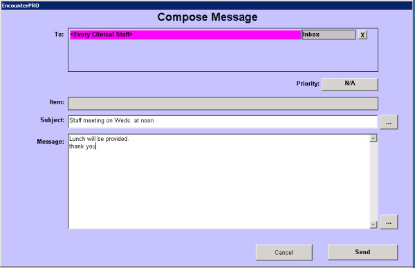

|
Description
This screen is used to create a new message. Messages are internal to the EncounterPRO system and can be sent only to other EncounterPRO users.
If you are creating a message from an encounter screen or the Patient Demographics screen, that patient will appear in the Item bar and the message and all subsequent replies will be saved in the patient's chart.
Messages can be given a priority:
- Urgent - identified in the recipients' inboxes with two red !!
- High - identified in the recipients' inboxes with one red !
- Normal
- Low
- N/A
How to Access This Screen
Access this screen by:
- Selecting New Msg on the Message List screen accessed from the Office View
- Selecting the Send Message button on any of the menus displayed by selecting the Patient Name bar in the Treatment Rooms, Checkout Room, Waiting Room, etc.
- Selecting the Send Message button at the bottom of the Patient Demographics screen
- Selecting the Send Message button on the Patient Chart (may have to select Other Items first)
Screen Example

Want to Learn More?
Related Solutions
Concept: High Priority Messages and Tasks
Concept: Messages and Tasks
How to: Create a High Priority Message
How to: Create a Message
How to: Reply to Messages
|